যুক্তরাজ্যের সড়ক চিহ্ন, বাংলায়
প্রতিটি চিহ্নের মানে আর তার ইংরেজি নাম। Signo একটি iPhone অ্যাপ: যুক্তরাজ্যে গাড়ি চালানোর জন্য 136টি চিহ্ন আর 535টি বাক্যাংশ, বাংলা ব্যাখ্যাসহ।
App Store থেকে ডাউনলোড করুনবিনামূল্যে: চিহ্নের 3টি বিষয় আর গাড়ির যন্ত্রাংশের 25টি শব্দ। Signo Pro সব খুলে দেয়।
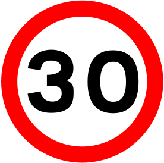


খেলার মতো শিখুন
চিহ্নটি জানলে ডানে সোয়াইপ করুন, না জানলে বাঁয়ে, সেটি আবার আসবে। প্রতিটি ইংরেজি নাম ব্রিটিশ উচ্চারণে শুনুন, তারপর ছোট একটি পরীক্ষা দিন।
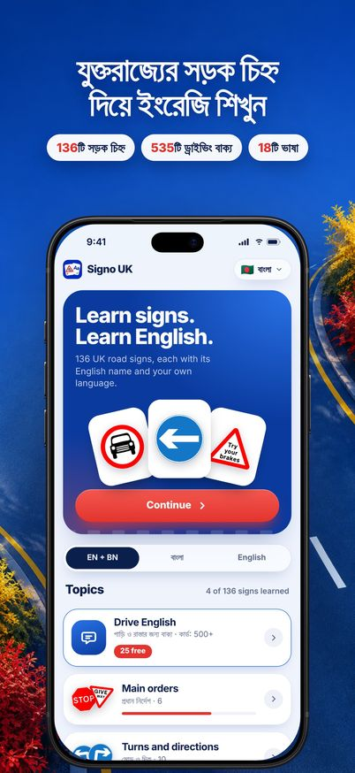
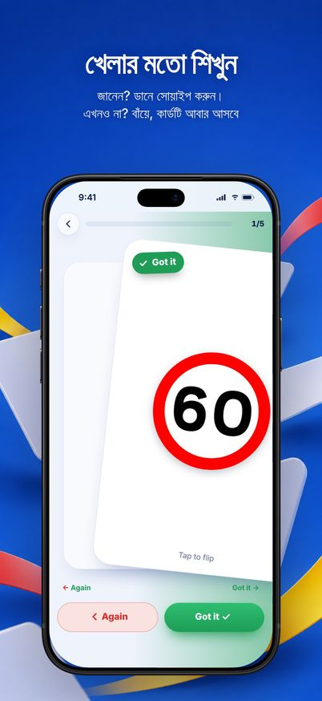
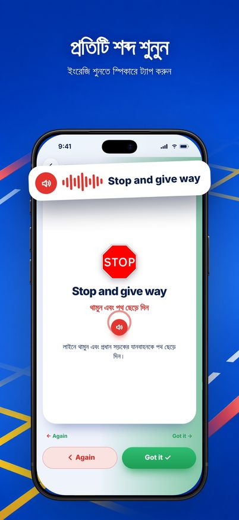
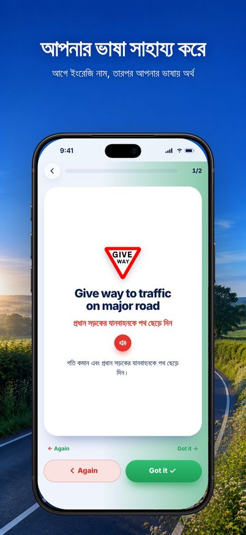
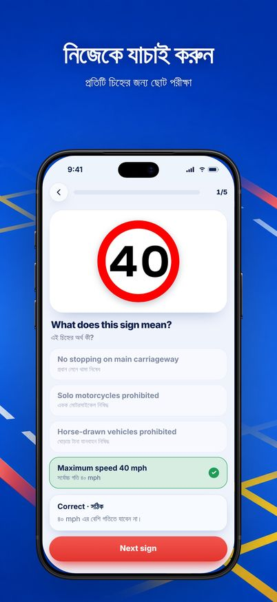
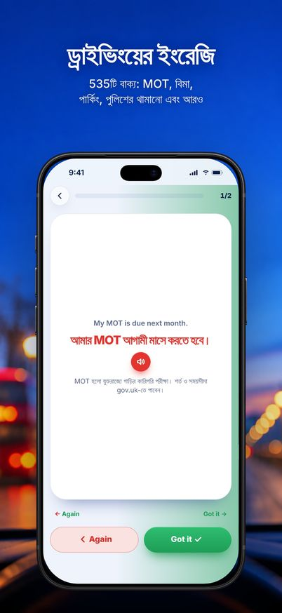
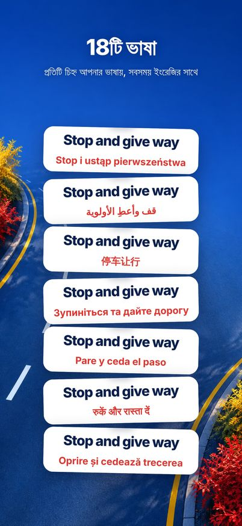
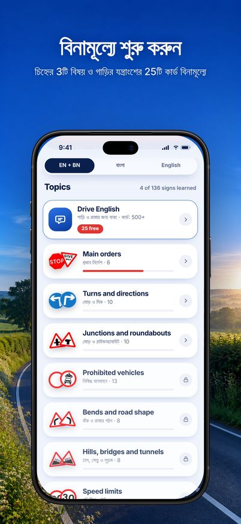
সাধারণ চিহ্ন ও তাদের অর্থ
ব্যাখ্যা দেখতে একটি চিহ্নে ট্যাপ করুন।
- থামুন এবং পথ ছেড়ে দিনStop and give way
 প্রধান সড়কের যানবাহনকে পথ ছেড়ে দিনGive way to traffic on major road
প্রধান সড়কের যানবাহনকে পথ ছেড়ে দিনGive way to traffic on major road যানবাহনের প্রবেশ নিষেধNo entry for vehicular traffic
যানবাহনের প্রবেশ নিষেধNo entry for vehicular traffic জাতীয় গতিসীমা প্রযোজ্যNational speed limit applies
জাতীয় গতিসীমা প্রযোজ্যNational speed limit applies- সর্বোচ্চ গতি ৩০ mphMaximum speed 30 mph
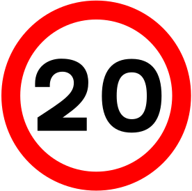
সর্বোচ্চ গতি ২০ mphMaximum speed 20 mph সর্বোচ্চ গতি ৪০ mphMaximum speed 40 mph
সর্বোচ্চ গতি ৪০ mphMaximum speed 40 mph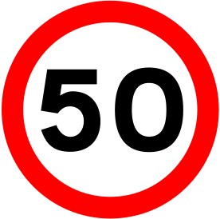
সর্বোচ্চ গতি ৫০ mphMaximum speed 50 mph সর্বোচ্চ গতি ৬০ mphMaximum speed 60 mph
সর্বোচ্চ গতি ৬০ mphMaximum speed 60 mph ২০ mph অঞ্চলে প্রবেশEntry to 20 mph zone
২০ mph অঞ্চলে প্রবেশEntry to 20 mph zone ওভারটেক করা নিষেধNo overtaking
ওভারটেক করা নিষেধNo overtaking ডানে ঘোরা নিষেধNo right turn
ডানে ঘোরা নিষেধNo right turn বাঁয়ে ঘোরা নিষেধNo left turn
বাঁয়ে ঘোরা নিষেধNo left turn ইউ-টার্ন নেওয়া নিষেধNo U-turns
ইউ-টার্ন নেওয়া নিষেধNo U-turns বাঁ দিক ধরে চলুনKeep left
বাঁ দিক ধরে চলুনKeep left মিনি রাউন্ডঅ্যাবাউটMini-roundabout
মিনি রাউন্ডঅ্যাবাউটMini-roundabout- সামনে রাউন্ডঅ্যাবাউটRoundabout ahead
 সব যানবাহন নিষিদ্ধAll vehicles prohibited
সব যানবাহন নিষিদ্ধAll vehicles prohibited মোটর যানবাহন নিষিদ্ধNo motor vehicles
মোটর যানবাহন নিষিদ্ধNo motor vehicles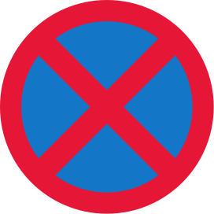
প্রধান লেনে থামা নিষেধNo stopping on main carriageway শুধু বাস, প্যাডেল সাইকেল ও ট্যাক্সির জন্য পথRoute for use by buses, pedal cycles and taxis only
শুধু বাস, প্যাডেল সাইকেল ও ট্যাক্সির জন্য পথRoute for use by buses, pedal cycles and taxis only নিয়ন্ত্রিত পার্কিং অঞ্চলে প্রবেশEntrance to controlled parking zone
নিয়ন্ত্রিত পার্কিং অঞ্চলে প্রবেশEntrance to controlled parking zone শুধু পারমিটধারীদের জন্যPermit holders only
শুধু পারমিটধারীদের জন্যPermit holders only শুধু প্রতিবন্ধী ব্যাজধারীদের জন্যDisabled badge holders only
শুধু প্রতিবন্ধী ব্যাজধারীদের জন্যDisabled badge holders only পার্কিংয়ের জায়গাParking place
পার্কিংয়ের জায়গাParking place স্পিড ক্যামেরাSpeed cameras
স্পিড ক্যামেরাSpeed cameras থামুন - পুলিশStop - Police
থামুন - পুলিশStop - Police যে স্থান থেকে মোটরওয়ের নিয়ম প্রযোজ্য হতে শুরু করেPoint at which motorway regulations start to apply
যে স্থান থেকে মোটরওয়ের নিয়ম প্রযোজ্য হতে শুরু করেPoint at which motorway regulations start to apply সামনে ট্রাফিক সংকেতTraffic signals ahead
সামনে ট্রাফিক সংকেতTraffic signals ahead জেব্রা ক্রসিংZebra crossing
জেব্রা ক্রসিংZebra crossing সামনে স্কুল বা খেলার মাঠে যাওয়া বা আসা শিশুরাChildren going to or from school or playground ahead
সামনে স্কুল বা খেলার মাঠে যাওয়া বা আসা শিশুরাChildren going to or from school or playground ahead রাস্তার কাজRoad works
রাস্তার কাজRoad works পিচ্ছিল রাস্তাSlippery road
পিচ্ছিল রাস্তাSlippery road সামনে গেট বা বেড়াসহ লেভেল ক্রসিংLevel crossing with gate or barrier ahead
সামনে গেট বা বেড়াসহ লেভেল ক্রসিংLevel crossing with gate or barrier ahead সামনে গেট বা বেড়া ছাড়া রেলওয়ে লেভেল ক্রসিংRailway level crossing without gate or barrier ahead
সামনে গেট বা বেড়া ছাড়া রেলওয়ে লেভেল ক্রসিংRailway level crossing without gate or barrier ahead বিপরীত দিক থেকে আসা যানবাহনকে অগ্রাধিকার দিনGive priority to vehicles from opposite direction
বিপরীত দিক থেকে আসা যানবাহনকে অগ্রাধিকার দিনGive priority to vehicles from opposite direction বিপরীত দিক থেকে আসা যানবাহনের ওপর আপনার অগ্রাধিকারTraffic has priority over oncoming vehicles
বিপরীত দিক থেকে আসা যানবাহনের ওপর আপনার অগ্রাধিকারTraffic has priority over oncoming vehicles দেখানো উচ্চতার চেয়ে উঁচু যানবাহন নিষিদ্ধNo vehicles over height shown
দেখানো উচ্চতার চেয়ে উঁচু যানবাহন নিষিদ্ধNo vehicles over height shown সামনে টি-মোড়T-junction ahead
সামনে টি-মোড়T-junction ahead সামনে চৌরাস্তাCrossroads ahead
সামনে চৌরাস্তাCrossroads ahead একক-লেনের রাস্তাSingle track road
একক-লেনের রাস্তাSingle track road পাশ কাটানোর জায়গাPassing place
পাশ কাটানোর জায়গাPassing place
গাড়ির যন্ত্রাংশ ইংরেজিতে
বিনামূল্যের Drive English অধ্যায়ের 25টি শব্দ। শুনতে শব্দে ট্যাপ করুন।
সব 136টি চিহ্ন অ্যাপে আছে
বিনামূল্যে: চিহ্নের 3টি বিষয় আর গাড়ির যন্ত্রাংশের 25টি শব্দ। Signo Pro সব খুলে দেয়।